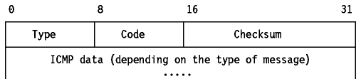
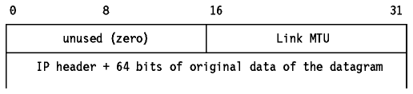
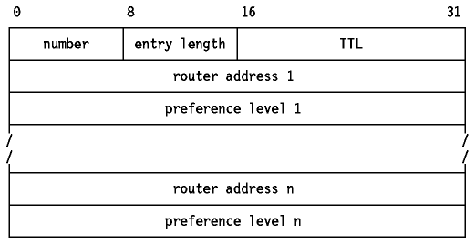
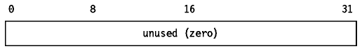

Table of Contents
Table of Contents  IP
Routing Algorithm
IP
Routing AlgorithmTable of Contents IP
Routing Algorithm
ICMP is a standard protocol with STD number 5 which also includes IP (see Internet Protocol (IP)) and IGMP (see Internet Group Management Protocol (IGMP)). Its status is required. It is described in RFC 792 with updates in RFC 950. It is part of STD 5 which also includes IP (see Internet Protocol (IP)).
Path MTU Discovery is a draft standard protocol with a status of elective. It is described in RFC 1191.
ICMP Router Discovery is a proposed standard protocol with a status of elective. It is described in RFC 1256.
When a router or a destination host must inform the source host about errors in datagram processing, it uses the Internet Control Message Protocol (ICMP). ICMP can be characterized as follows:
ICMP messages are described in RFC 792 and RFC 950, belong to STD 5 and are mandatory.
ICMP messages are sent in IP datagrams. The IP header will always have a
Protocol number of 1, indicating ICMP and a type of service of zero (routine).
The IP data field will contain the actual ICMP message in the format shown in
Figure - ICMP Message Format.

Figure: ICMP Message Format
Where:
Each of the messages is explained below.
See Echo (8) and Echo Reply (0).
If this message is received from an intermediate router, it means that the router regards the destination IP address as unreachable.
If this message is received from the destination host, it means that the protocol specified in the protocol number field of the original datagram is not active, or that protocol is not active on this host or if the specified port is inactive (see User Datagram Protocol (UDP) for an introduction to the port concept).
The ICMP header code field will have one of the following values:
If a router implements the Path MTU Discovery protocol, the format of the
Destination unreachable message is changed for code 4 to include the MTU of the
link which could not accept the datagram.

Figure: ICMP Fragmentation Required with Link MTU
If this message is received from an intermediate router, it means that the router does not have the buffer space needed to queue the datagrams for output to the next network.
If this message is received from the destination host, it means that the incoming datagrams are arriving too quickly to be processed.
The ICMP header code field is always zero.
If this message is received from an intermediate router, it means that the host should send future datagrams for the network to the router whose IP address is given in the ICMP message. This preferred router will always be on the same subnet as the host which sent the datagram and the router which returned the IP datagram. The router will forward the datagram to its next hop destination. If the router IP address matches the source IP address in the original datagram header it indicates a routing loop. This ICMP will not be sent if the IP datagram contains a source route.
The ICMP header code field will have one of the following values:
Echo is used to detect if another host is active on the network. The sender initializes the identifier and sequence number (which is used if multiple echo requests are sent), adds some data to the data field and sends the ICMP echo to the destination host. The ICMP header code field is zero. The recipient changes the type to Echo Reply and returns the datagram to the sender. This mechanism is used by the Ping command to determine if a destination host is reachable (see Ping).
ICMP messages 9 and 10 are optional. They are described in RFC 1256 which is elective.

Figure: ICMP Router Advertisement

Figure: ICMP Router Solicitation
The ICMP header code field is zero for both of these messages.
These two messages are used if a host or a router supports the Router Discovery Protocol. The use of multicasting is recommended, but broadcasting may be used if multicasting is not supported on an interface. Routers periodically advertise their IP addresses on those subnets where they are configured to do so. Advertisements are made on the all-systems multicast address (224.0.0.1) or the limited broadcast address (255.255.255.255). The default behavior is to send advertisements every 10 minutes with a TTL value of 1800 (30 minutes). Routers also reply to solicitation messages they receive. They may reply directly to the soliciting host, or they may wait a short random interval and reply with a multicast. Hosts may send solicitation messages when they start until they receive a response. Solicitation messages are sent to the all-routers multicast address (224.0.0.2) or the limited broadcast address (255.255.255.255). Typically, three solicitation messages are sent at 3-second intervals. Alternatively a host may wait for periodic advertisements. Each time a host receives an advertisement, it updates its default router if the new advertisement has one with a higher preference value and sets the TTL timer for the entry to match the value in the advertisement. When the host receives a new advertisement for its current default router, it resets the TTL value to that in the new advertisement. This also provides a mechanism for routers to declare themselves unavailable: they send an advertisement with a TTL value of zero.

If this message is received from an intermediate router, it means that the time-to-live field of an IP datagram has expired.
If this message is received from the destination host, it means that the IP fragment reassembly time-to-live timer has expired while the host is waiting for a fragment of the datagram. The ICMP header code field may have the one of the following values:
Indicates that a problem was encountered during processing of the IP header parameters. The pointer field points to the byte in the original IP datagram where the problem was encountered. The ICMP header code field may have the one of the following values:
These two messages are for performance measurements and for debugging. They are not used for clock synchronization: the Network Time Protocol is used for that (see Time and Daytime Protocols).
The sender initializes the identifier and sequence number (which is used if multiple timestamp requests are sent), sets the originate timestamp and sends it to the recipient. The receiving host fills in the receive and transmit timestamps, changes the type to Timestamp reply and returns it to the recipient. The receiver has two timestamps in case there is a perceptible time difference between the receipt and transmit times, but in practice, most implementations will perform the two (receipt and reply) in one operation and will set the two timestamps to the same value. Timestamps are the number of milliseconds elapsed since midnight UT (GMT).
An Information Request is issued by a host to obtain an IP address for an attached network. The sender fills in the request with the destination IP address in the IP header set to zero (meaning this network) and waits for a reply from a server authorized to assign IP addresses to other hosts. The ICMP header code field is zero. The reply will contain IP network addresses in both the source and destination fields of the IP header. This mechanism is now obsolete. See also Reverse Address Resolution Protocol (RARP).
An Address Mask Request is used by a host to determine the subnet mask in use on an attached network. Most hosts will be configured with their subnet mask(s), but some, such as diskless workstations, must obtain this information from a server. A host uses RARP (see Reverse Address Resolution Protocol (RARP)) to obtain its IP address. To obtain a subnet mask, the host broadcasts an Address Mask Request. Any host on the network which has been configured to send Address Mask Replies will fill in the subnet mask, convert the packet to an Address Mask Reply and return it to the sender. The ICMP header code field is zero.
There are two simple and widely used applications which are based on ICMP: Ping and Traceroute. Ping uses the ICMP Echo and Echo Reply messages to determine whether a host is reachable. Traceroute sends IP datagrams with low TTL values so that they expire en route to a destination. It uses the resulting ICMP Time Exceeded messages to determine where in the internet the datagrams expired and pieces together a view of the route to a host. These applications are explained in Ping and Traceroute.
The ICMP implementation above is specific to IP Version 4 (IPv4). IP Version 6 (IPv6, see IP Version 6 (IPv6)) will require a new version of ICMP. The definitions of both new versions of ICMP and IP are not yet complete. Important features already known are:
 Ping
Ping